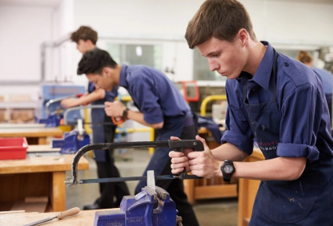
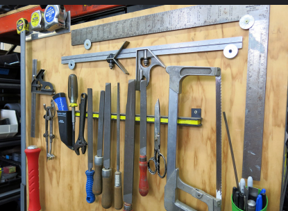
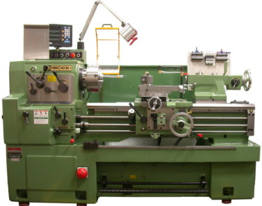

Key Definition
Metalwork technology is the practice of shaping and working with metals to make tools, decorations, machines, and many everyday items. It’s both a skill and a science—people have done it for thousands of years, and it has always helped us build amazing things
How Metals Are Made and Transformed
Before working with metals, it's helpful to know how they are made and transformed.
- Classification of Metals
- Ferrous metals, which contain iron (like steel and cast iron).
- Non-ferrous metals, which don’t contain iron (like aluminum, copper, brass, and zinc)
- Methods of Changing Metal Shapes
- Casting – pouring molten metal into a mold to get a shape you want
- Forming – bending or hammering metal (sometimes heated) into shape
- Machining/Cutting – removing parts of metal using tools like lathes, mills, drills, or using CNC machines
- Joining – putting metal parts together using welding, brazing, or forge welding
- Finishing & Treatment
Metals fall into two groups:
Metalworking allows us to change the shape of metal using different processes:
After shaping metal, treatments like heat treatment can make metals stronger or tougher. For example, quenching cools metal quickly to harden it, and tempering makes it less brittle We also use plating to coat metal (like covering steel with chromium to prevent rust)
How Metalwork Builds Useful Things
Metalwork helps us turn raw metal into useful parts—whether it’s simple or super complex. For example, metal fabrication includes:
- Cutting metal into pieces.
- Bending and fastening them to form shapes.
- Joining them securely, especially with welding
- Finishing their surfaces to protect or beautify
Why Metalwork Is Important
Metalwork has shaped history and continues to shape our world. Long ago, inventors used casting and hammering to craft tools and art. Today, industries rely on metal parts made with precision and speed—often using CNC machines and robotics
Metalwork Tools & Machines
Metalwork technology is all about turning raw metal into useful things—tools, decorations, parts, and more. To do this safely and accurately, metalworkers rely on a wide variety of tools and machines. These let them cut, shape, join, and finish metal in different ways.
- Common Hand Tools & Layout Tools 
- Scriber and center punch – for marking lines and spots to guide cutting or drilling Combination square – helps draw accurate right angles and lines.
- Hacksaw – a handheld saw with fine teeth for cutting metal rods or sheets End-cutting pliers – for cutting wires or thin metal pieces.
- Angle grinder – spins a disc to cut, grind, or polish metal.
- File, hammer, ball-peen hammer, clamp, vice – used for shaping, holding, and finishing.
- Essential Machines for Metal Shops
- Lathe Machine – spins metal to turn, shape, drill, or thread it.
- Milling Machine – uses spinning cutters to shape or drill metal
- Drill Press – makes precise holes in metal, held steady on a base
- Bandsaw – great for cutting thick or curved metal shapes
- Grinding Machine – smoothens and shapes metal surfaces using rotating abrasive wheels
- Shaping & Cutting Machines
- • Shaper – moves a single-point tool back and forth to cut straight lines and shapes
- • Planer – similar to a shaper but works on larger pieces, moving the metal instead of the tool
- • Broaching Machine – uses a special toothed tool to shape metal in one push or rotation
- • Honing Machine – polishes inside surfaces like engine cylinders using tiny abrasive stones
- Fabrication & CNC Technologies 
- Presses, roll benders, power hammers, ironworkers – used to bend, punch, stamp, and form metal
- Box & Pan Brake, notcher, shear – for bending and cutting sheet metal accurately
- CNC(computer Numerical Control) Machines:
Metalwork starts with the basics: hand tools used for marking, shaping, and measuring.
Larger workshops use machines for faster and more accurate work:
These machines work on shaping or cutting metal more precisely or quickly:
For forming and automated precision work, these are key:
CNC Laser Cutters, Plasma Cutters, Waterjets, Punches – computer-guided tools for precise, fast cutting and shaping